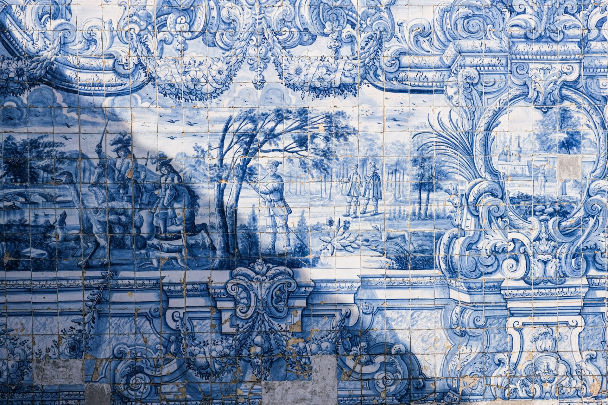
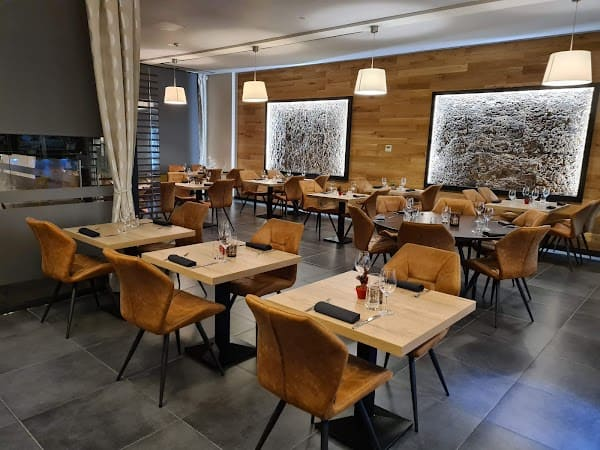
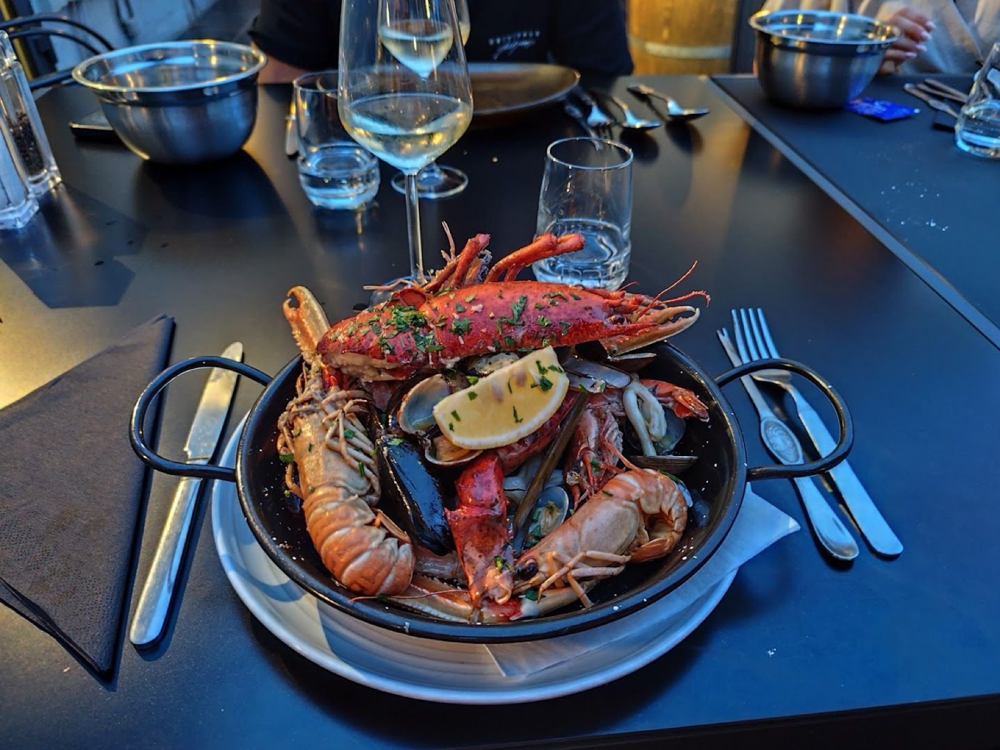
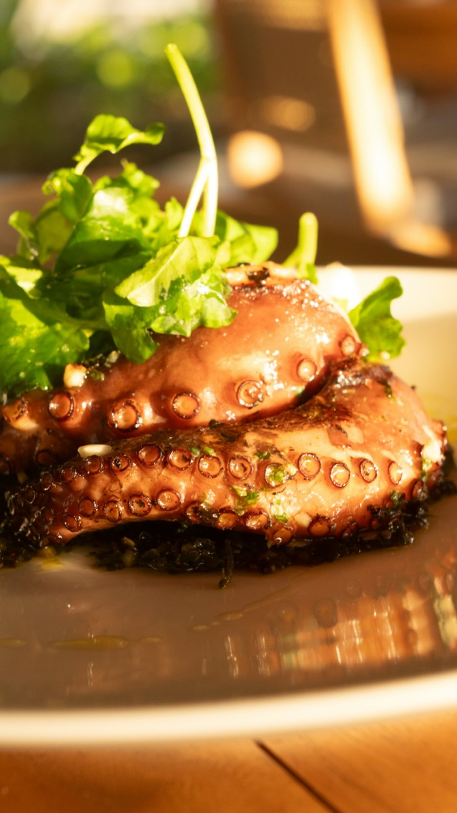
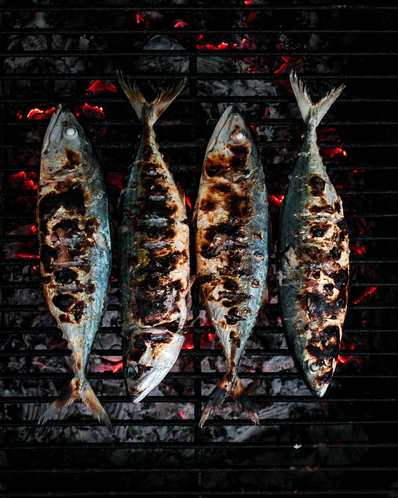
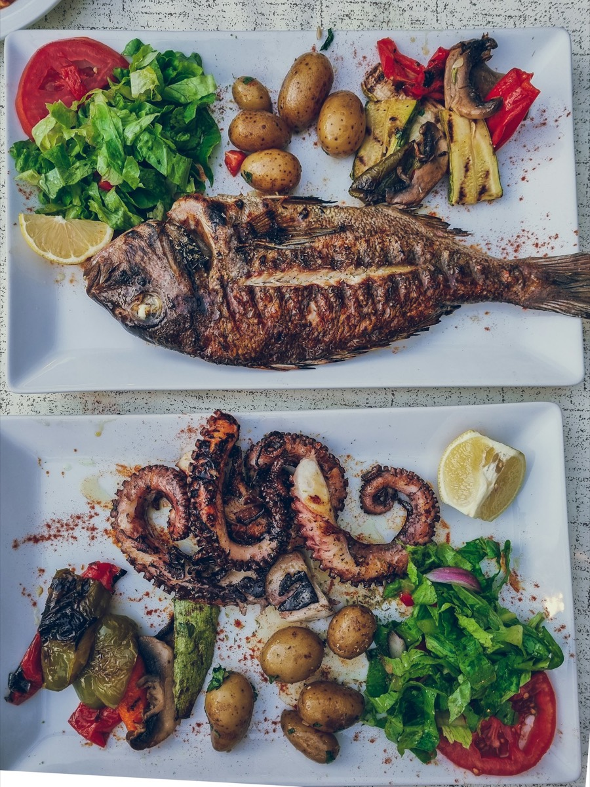
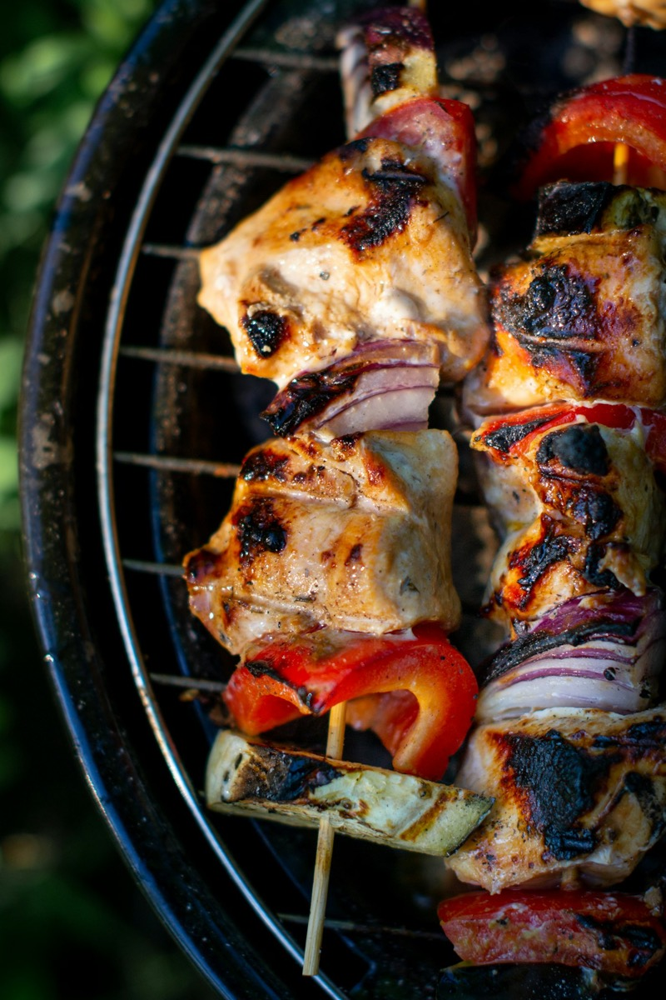
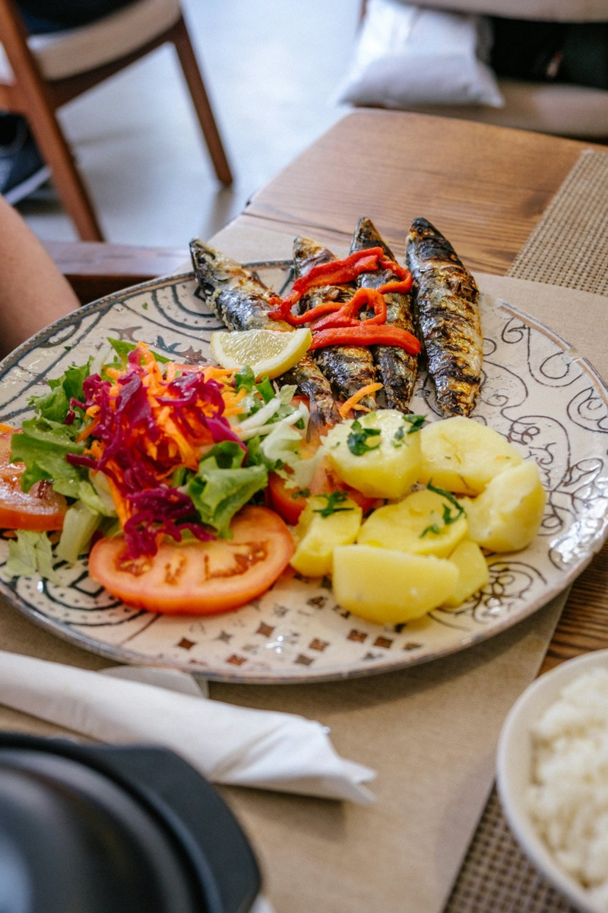
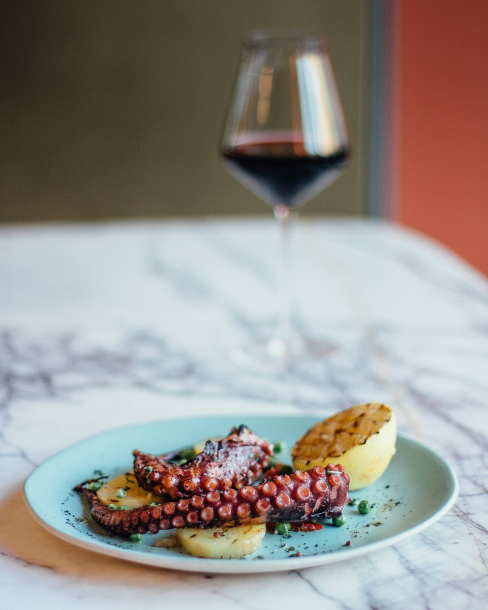

Le grill, la mer et le porto : une table portugaise généreuse, à partager.
Ici, la cuisine portugaise se partage comme au pays : généreuse, franche, sans détour.
Le grill donne le ton : poulpe saisi, sardines, brochettes et grillades. La mer arrive à table en grandes poêlées qu'on pose au milieu et qu'on partage, avec un filet de citron et du pain pour la sauce.
Dans une salle chaleureuse, bois clair et fauteuils couleur cognac, on prend le temps. Un vin portugais pour accompagner le repas, un verre de porto tawny pour le conclure.
Une adresse que ses habitués recommandent les yeux fermés, et que près de 900 avis Google résument mieux que nous.

Le port de Cale, à l'embouchure du Douro, là où se dresse aujourd'hui Porto.
Le nom s'étend du port à tout le comté qui l'entoure.
Le comté devient un royaume, et le port donne son nom à tout un pays.
Notre table porte ce nom, et le goût qui va avec : le grill, la mer, le porto.
Du grill à la poêlée de la mer, une cuisine qui se regarde avant de se partager.






Le plus simple, c'est un coup de fil. Pensez à réserver, surtout le week-end.
Chaussée de Bruxelles 139
6042 Lodelinsart (Charleroi)
